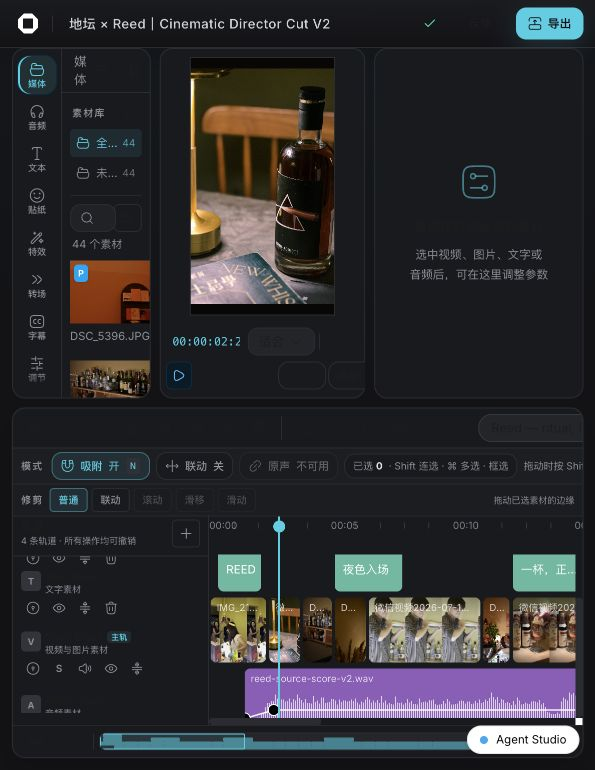
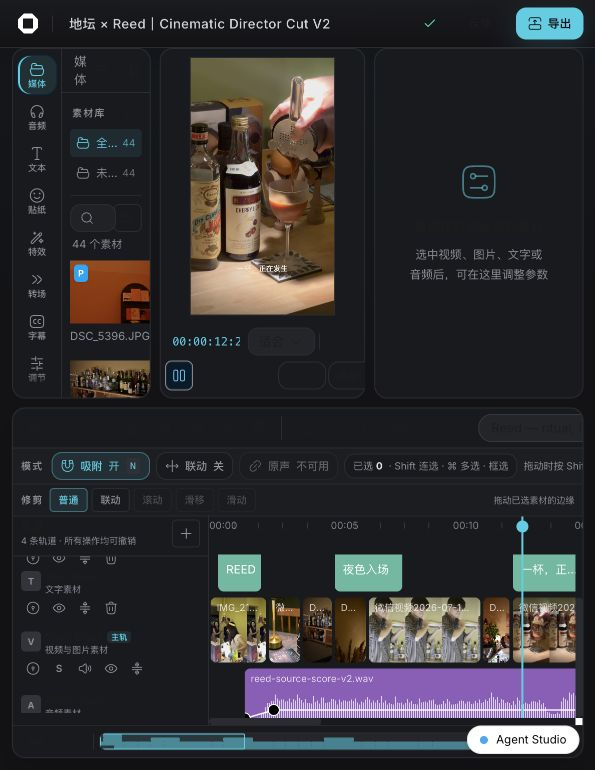
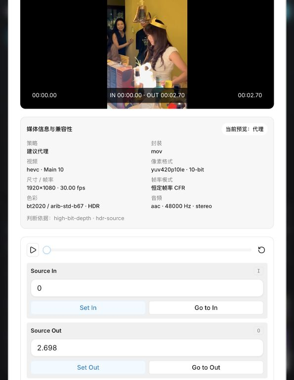
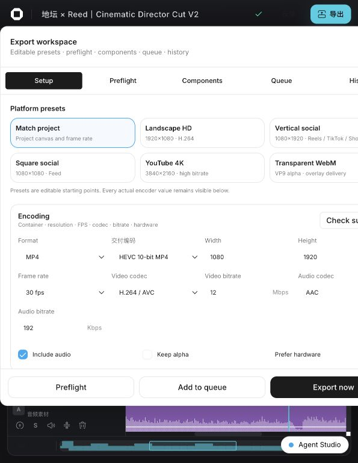
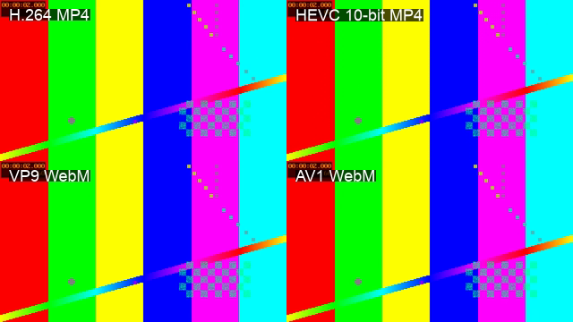
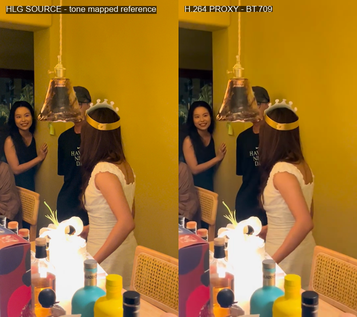

Automated tests
574 / 574
115 个测试文件，0 fail
HoloCut 已完成浏览器能力探测、本地 FFmpeg 兜底、自动代理、稳定预览、 VFR 音画同步、10-bit/HDR 基础色彩、15 种交付格式和 Agent 原子接口。 本报告以真实 iPhone HEVC/HLG 素材与可复现测试为准，不以“按钮存在”代替功能完成。
所有核心数值来自本机真实执行。输出文件经过 FFprobe 元数据检查，并重新完整解码；画质敏感路径同时保留 SSIM、PSNR 与画面对照。
真实 2.698 秒旋转 HLG Main10 素材在 2.449 秒内生成 540×960 H.264/AAC 代理，效率 1.102× realtime，体积减少 86.3%。
媒体详情同时呈现源编码、浏览器兼容判断、原因码与当前预览来源。昂贵或浏览器不支持的媒体自动进入代理流程，原素材和时间线引用保持不变。



每个预设都进入真实 FFmpeg 作业，完成后再次探测容器、编码、位深、尺寸、帧率、音频与色彩标签；视频还会进行完整解码。界面报告实际使用的编码器与软件/硬件路径。

| 预设 | 容器 / 编码 | 效率 | SSIM | PSNR | 位深 | 结果 |
|---|---|---|---|---|---|---|
| H.264 MP4 | MP4 / H.264 + AAC | 4.945× | 0.998542 | 50.557 dB | 8 | PASS |
| HEVC MP4 | MP4 / HEVC + AAC | 2.955× | 0.997677 | 48.463 dB | 8 | PASS |
| HEVC 10 MP4 | MP4 / HEVC + AAC | 2.207× | 0.998108 | 49.383 dB | 10 | PASS |
| H.264 MOV | MOV / H.264 + AAC | 6.547× | 0.998542 | 50.557 dB | 8 | PASS |
| HEVC MOV | MOV / HEVC + AAC | 2.728× | 0.997682 | 48.459 dB | 8 | PASS |
| HEVC 10 MOV | MOV / HEVC + AAC | 2.321× | 0.998108 | 49.383 dB | 10 | PASS |
| H.264 MOV PCM | MOV / H.264 + PCM | 5.934× | 0.998542 | 50.557 dB | 8 | PASS |
| HEVC 10 MOV PCM | MOV / HEVC + PCM | 1.940× | 0.998108 | 49.383 dB | 10 | PASS |
| VP9 WebM | WebM / VP9 + Opus | 0.945× | 0.998536 | 50.973 dB | 8 | PASS |
| AV1 WebM | WebM / AV1 + Opus | 1.344× | 0.997568 | 48.377 dB | 8 | PASS |
| WAV | WAV / PCM | 26.300× | — | — | — | PASS |
| M4A | M4A / AAC | 4.983× | — | — | — | PASS |
| MP3 | MP3 | 24.760× | — | — | — | PASS |
| FLAC | FLAC | 25.724× | — | — | — | PASS |
| Ogg Opus | Ogg / Opus | 22.577× | — | — | — | PASS |

源文件的 primaries、transfer、matrix、range 与 bit depth 被完整保留到诊断层。P3、PQ、HLG 进入 SDR 画布前使用确定的 BT.709 策略，代理产物统一验证 tv range 与 BT.709 标签。

Agent 调用不绕开编辑器状态，也不生成不可追踪的旁路文件。媒体诊断、代理开关、批量重建、交付、取消、重试与结果查询都复用同一作业模型和校验语义。
浏览器主世界桥接版本 1；共 41 个编辑操作，其中 12 个为媒体、代理、作业和交付方法。真实 HEVC/HLG 素材已通过 Agent 完成 probe 与 ensureProxy。
目标范围内的失败模式均有自动化或真实执行证据。仓库历史问题不被隐藏：它们与本次改动的验证结果分开记录。
| 能力组 | RED / 约束提交 | GREEN / 交付提交 | 主要证据 |
|---|---|---|---|
| 基线与预算 | — | 0b8f0d4 | 16 类媒体基线、探测与代理基准 |
| 探测与兼容 | 5b1477c · 541b08d | aa6c61f · 20d03ac · 18235cd | 缓存、reason code、中文诊断 |
| 代理作业 | 23cc298 · 4bf1c4b · 81d827c | f5a9144 · 4282ffe · 844c3f2 | 取消/重试/恢复、两 worker 上限、自动代理 |
| 交付矩阵 | 4986a74 · c976430 · f40d2da | c4d9410 · 02e83b1 · de5d558 | 15/15 预设完整解码，Main10 保留 |
| 预览与色彩 | 16e0ea8 · e2fbfae | 1a7d273 · d0efc58 · e7c97c5 | 预热、受控缓存、VFR、P3/PQ/HLG → BT.709 |
| 生产资格 | — | cc33393 · 85a23e5 · fc01a58 | 生产构建、旋转尺寸、失败恢复与清理 |
逐项验收条件、RED/GREEN 对照与例外说明见 HoloCut Codec Goal Plan。